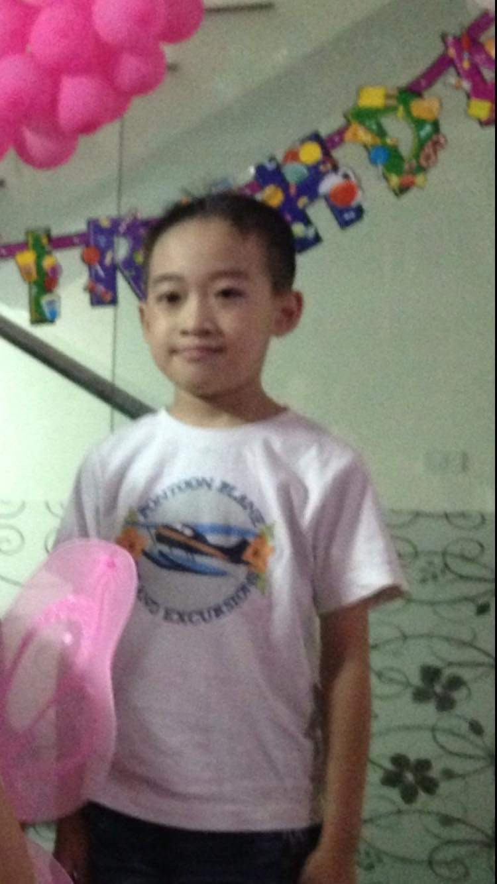

Họ và Tên: Nguyễn Quang Hiệp Ngày sinh: 01/05/2005 Nghề nghiệp: Sinh Viên học tập tại trường đại học Thủ Đô Hà Nội Quê quán: Thành phố Hạ Long Tỉnh Quảng Ninh Sở thích:Sở thích của tôi rất đa dạng và phản ánh những điều tôi đam mê trong cuộc sống. Tôi thích đọc sách vì nó giúp tôi khám phá những thế giới mới và mở rộng kiến thức. Thêm vào đó, tôi đam mê viết lách, và thường xuyên dành thời gian để viết nhật ký hoặc các bài viết sáng tạo. Khi có thời gian rảnh, tôi cũng thích xem phim và khám phá các thể loại khác nhau, từ hành động đến tâm lý. Đặc biệt, tôi rất yêu thích đi du lịch để trải nghiệm những nền văn hóa khác và khám phá những địa điểm mới. Thể thao cũng là một phần quan trọng trong cuộc sống của tôi; tôi thường xuyên tập luyện và chơi thể thao để duy trì sức khỏe và tinh thần minh mẫn..
